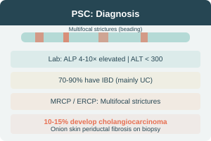

PSC — Overview & Diagnosis
Essentials for Diagnosis
- Progressive inflammatory disease of intra- & extrahepatic bile ducts
- Marked elevation of ALP
- MRCP / ERCP essential for diagnosis
- Small duct PSC: diagnosed by biopsy
- Liver biopsy: obliteration of small bile ducts → "onion skin" fibrosis
- 10–15% develop cholangiocarcinoma
General Consideration
- Unknown etiology — medium & large bile ducts
- 70–90% have IBD (mainly UC)
- May have other autoimmune disorders
- Progresses to secondary biliary cirrhosis, portal HTN, varices, ascites
Laboratory & Imaging
Lab Findings
- Cholestatic pattern: ALP 4–10× elevated
- ALT usually <300 (disproportionate elevation)
- Positive ANA / ASMA (overlap with AIH)
Imaging (ERCP / MRCP)
- Multifocal strictures with narrowing & beading
- Small duct PSC: normal imaging, biopsy-proven
Histology
Obliteration of small bile ducts with concentric "onion skin" periductal fibrosis
